VolMusCo: Learning Full-Body Motion Control with Volumetric Muscles
Abstract
We present VolMusCo, a simulation and learning framework for full-body motion control driven by volumetric muscles. Our approach establishes two-way coupling between muscles and the skeleton: muscle activations induce contraction along embedded fibers, deforming the volumetric tissue and generating forces that are transmitted to the skeleton through muscle attachments and wrapping contacts. In turn, skeletal motion changes the attachment and wrapping geometry, influencing tissue deformation and force transmission. This coupling brings volumetric deformation directly into the controlled dynamics. To make learning computationally efficient, we introduce a simplified tetrahedral muscle representation that preserves essential volumetric deformation and force transmission while substantially reducing simulation cost. Building on this representation, we develop a model-based reinforcement learning framework that learns a differentiable world model from physical transitions and uses predicted future motion to improve the control policy. On LaFAN1 motion tracking, our method achieves a tracking success rate of 97.9% and a mean local-body position error of 5.52 cm within 10 h of training.
Runtime 9-Tet Mesh vs. Anatomical Surface
Inspect the exact same closed-loop policy trajectory across two synchronized camera angles. Drag the circular handles (↔) inside View A and View B to compare the runtime 9-tet deformable muscle bellies & routed tendons against the reconstructed continuous muscle surface.
Full-Body Volumetric Skill Gallery
Explore 55 closed-loop rollouts and biomechanical studies rendered with real-time muscle activation coloring (blue to red), spanning handheld weapons, multi-load strength training, tennis returns, three-ball juggling, LaFAN1 locomotion & acrobatics, monocular video tracking, muscle fatigue, shared fascial coupling, soft-tissue inertia, and RL baseline ablations.
Two-Way Volumetric Coupling & World-Model Learning
Rather than driving volumetric muscles one-way from prescribed skeletal kinematics, VolMusCo places quasi-static tetrahedral tissue equilibrium directly inside the control loop and learns a differentiable world model over the resulting coupled transitions.
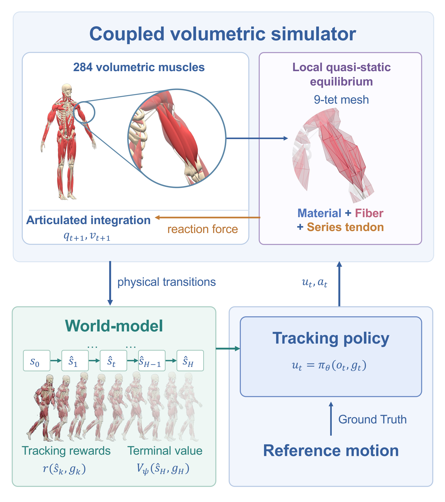
System Pipeline. At 50 Hz policy control, muscle excitations drive 100 Hz quasi-static Projective Dynamics (PD) solves over 284 volumetric muscles. Skeletal pose q updates endpoint attachments, bone-fixed tendon waypoints, and wrapping cylinders; the converged tissue shape supplies generalized reaction wrenches integrated at 1 kHz in MJWarp. Physical replay transitions train a differentiable world model used to optimize the actor and critic over short imagined rollouts.
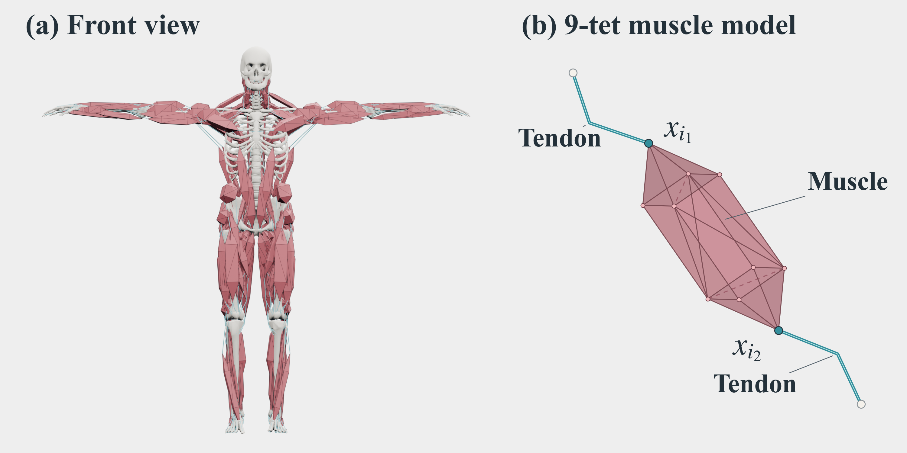
Simplified 9-Tet Muscle Representation. Each of the 284 anatomical muscle units is discretized into a 10-vertex, 9-tetrahedron belly (2,840 vertices and 2,556 tetrahedra full-body) calibrated to RLMuscle anatomical volumes (30.24 L total), enabling batched GPU solves across 2,048 parallel environments.
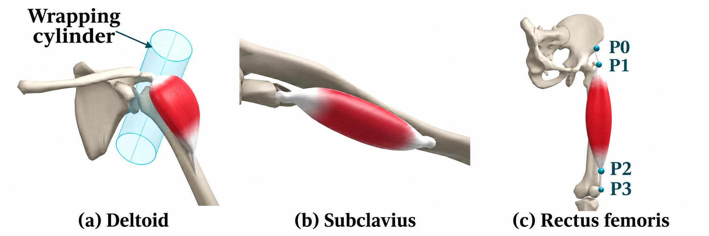
Three Muscle–Joint Interaction Channels. (a) Deltoid bellies wrap over bone-carried cylinders via penalty contact; (b) short muscles like the subclavius attach directly to bone; (c) long tendons like the rectus femoris route through bone-fixed waypoints Pi.
Fidelity, Force Feedback & Learning Efficiency
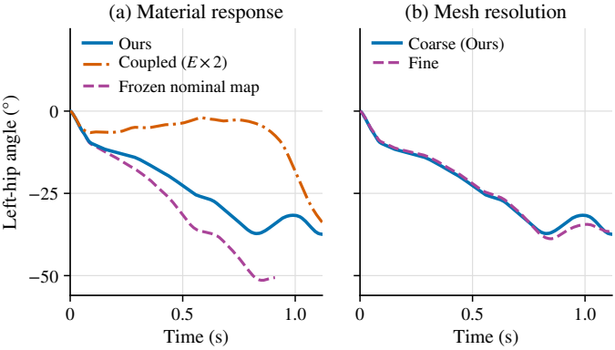
Deformation-Dependent Force Feedback. Replaying identical activation sequences from matched initial states: (a) doubling Young's modulus (E×2) alters the coupled joint trajectory, whereas a frozen nominal MLP map diverges at 0.91 s; (b) 9-tet and 230-tet meshes produce closely matched trajectories (1.87° full-body RMSE).
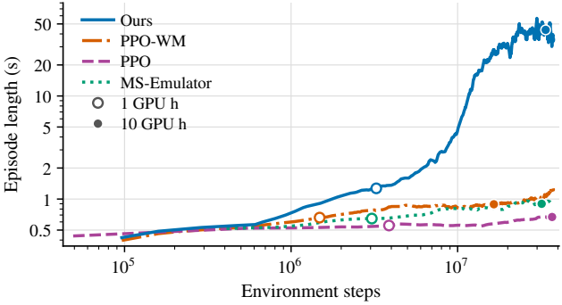
World-Model Sample & Wall-Clock Efficiency. Imagined rollouts with a 32-step critic horizon reach a 10 s mean episode length in 9.63M transitions (3.00 GPU-h), whereas model-free PPO fails to reach 10 s within 188.7M transitions (>50.2 GPU-h).
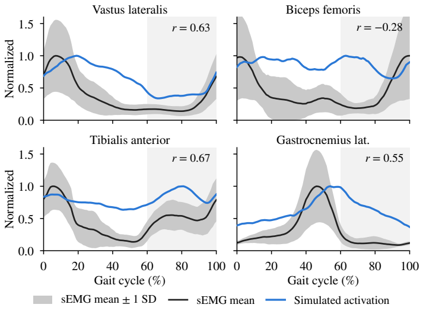
Emergent Gait-Phase Recruitment vs. Human sEMG. Without EMG supervision, walking policies recover primary burst timing across 97 strides—quadriceps in early stance (r = 0.63), triceps surae at push-off (r = 0.55), and tibialis anterior across stance-to-swing (r = 0.67).
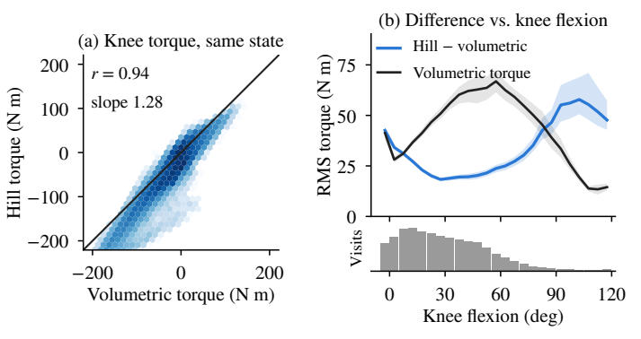
Volumetric vs. 1D Hill-Type Joint Loads. Evaluated across 172k visited LaFAN1 states at identical poses and activations: volumetric and Hill knee torques correlate in trend (r = 0.94), but exhibit pose-dependent nonlinear differences (36–41% RMS residual after optimal gain scaling).
Mesh-Resolution & Actuation Benchmarks
Full-body simulation throughput (2,048 environments on a single RTX 4090) and 47-clip LaFAN1 tracking accuracy.
| Configuration | Tets / Body | Samples / s | Local Err. | Success |
|---|---|---|---|---|
| VolMusCo (9-tet) | 2,556 | 815 | 5.52 cm | 97.9% |
| Fine Mesh (230-tet) | 65,320 | 0.05 | ΔT = 9.46%, Δq = 1.87° | |
| 1D Hill Line | — | 9,030 | 4.92 cm | 97.9% |
Solver & Learning Horizon Ablations
Batched two-biceps warm-start solver latency (256 worlds) and world-model horizon scaling.
| Method / Solver | Latency / Budget | Key Metric |
|---|---|---|
| Projective Dynamics (Ours) | 2.23 ms / batch | 0.020 N·m torque diff vs. Newton |
| Routed Tet FEM (Newton) | 133.0 ms / batch | Reference exact Newton solve |
| Quasi-Static TL-MPM | 113.6 ms / batch | 5.09 N·m torque discrepancy |
| World Model (Critic H = 32) | 3.00 GPU-h @ 10 s | 506.5 steps mean ep. length |
| Model-Free PPO | >50.2 GPU-h @ 10 s | 31.6 steps mean ep. length |
Extended Biomechanical & Numerical Studies
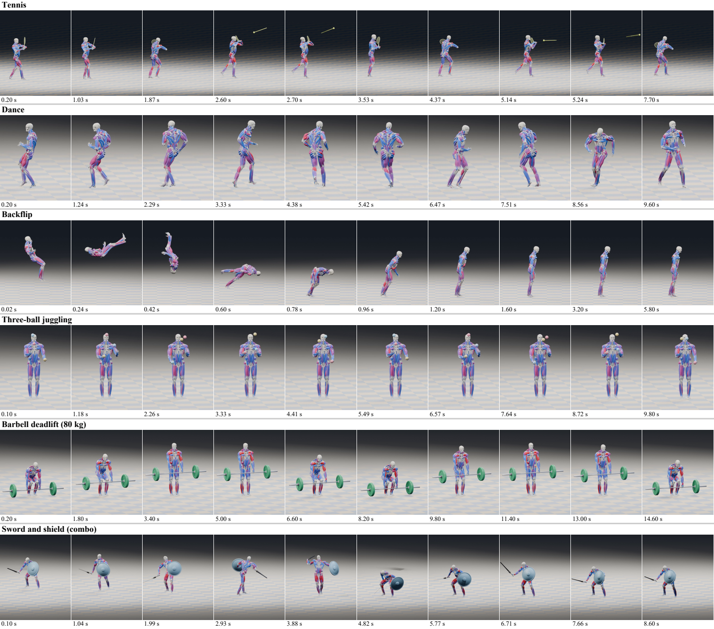
Closed-Loop Volumetric Motion Sequences. Chronologically ordered snapshots across diverse whole-body skills: tennis ball returns, expressive dance, standing backflip, three-ball cascade juggling, 80 kg barbell deadlift, and sword-and-shield combat. Muscle color indicates real-time activation from blue (0) to red (1).
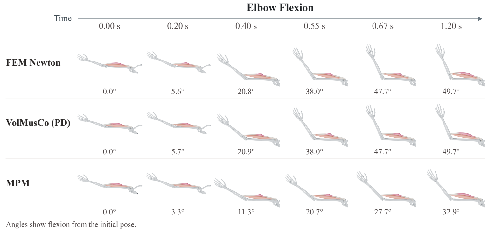
Muscle-Driven Elbow Flexion Across Solvers. Driven by identical activations, our batched Projective Dynamics solver (middle) matches full FEM Newton (top) within 0.020 N·m while running 59.6× faster (2.23 ms vs. 133.0 ms per 256-world batch). Quasi-static MPM (bottom) under-flexes due to grid-to-tendon transfer stiffness differences.
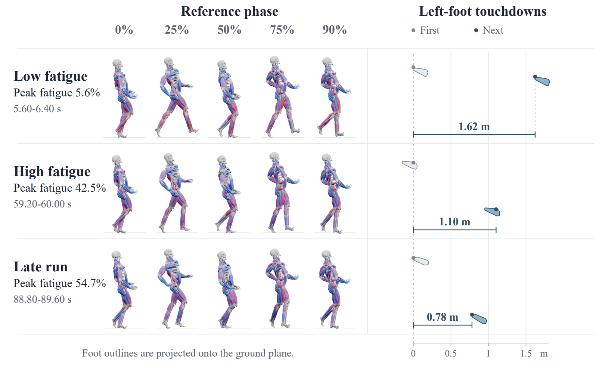
Long-Horizon Running Under 3CC-r Muscle Fatigue. Coupling a three-compartment fatigue state into the 284 volumetric muscles naturally induces progressive stride shortening from 1.62 m → 1.10 m → 0.78 m as peak muscle fatigue accumulates; fine-tuning with fatigue extends survival from 92.60 s to 124.58 s.
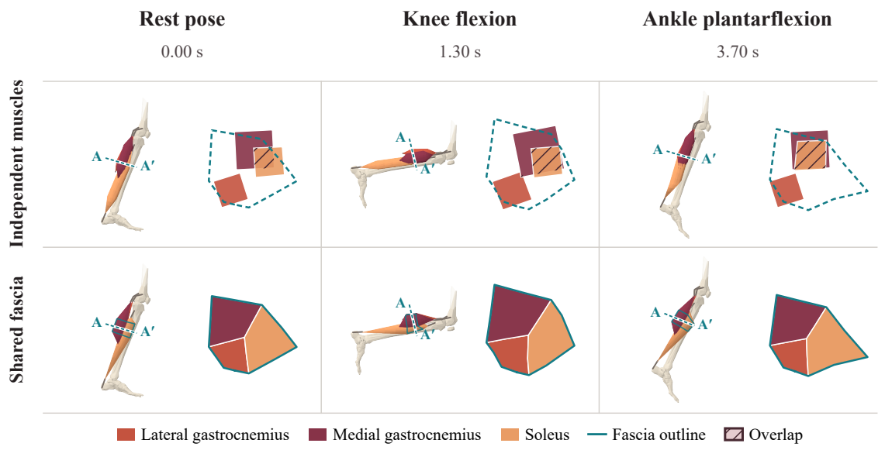
Local Fascial Coupling in a Three-Muscle Calf Compartment. Packing the medial/lateral gastrocnemius and soleus inside a tension-only hexagonal tibial sleeve with sliding unilateral contact eliminates inter-belly overlap (hatched in A–A′) and limits outward bulging at 1.58× solve cost.
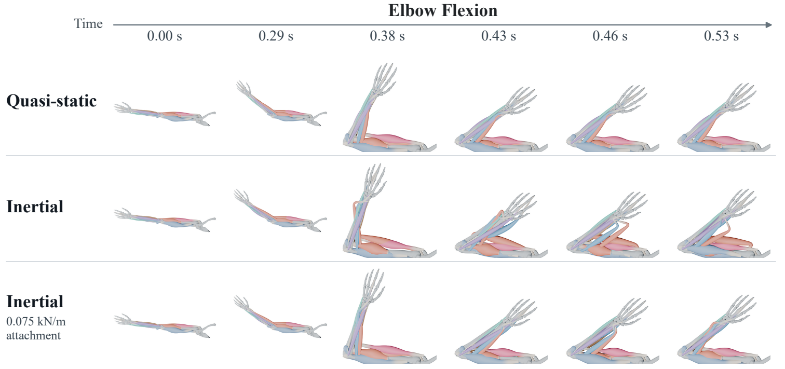
Quasi-Static vs. Inertial Tissue Prototype. Adding backward-Euler vertex mass produces soft-tissue oscillations during rapid elbow flexion (middle) that compliant 0.075 kN/m attachments damp (bottom), motivating our quasi-static belly + inertial skeleton split for scalable full-body RL.
BibTeX
@article{ding2026volmusco,
title = {VolMusCo: Learning Full-Body Motion Control with Volumetric Muscles},
author = {Ding, Wangyingqi and Feng, Yusen and He, Kaibo and Han, Bingchen and Liu, Libin},
journal = {arXiv preprint},
year = {2026}
}